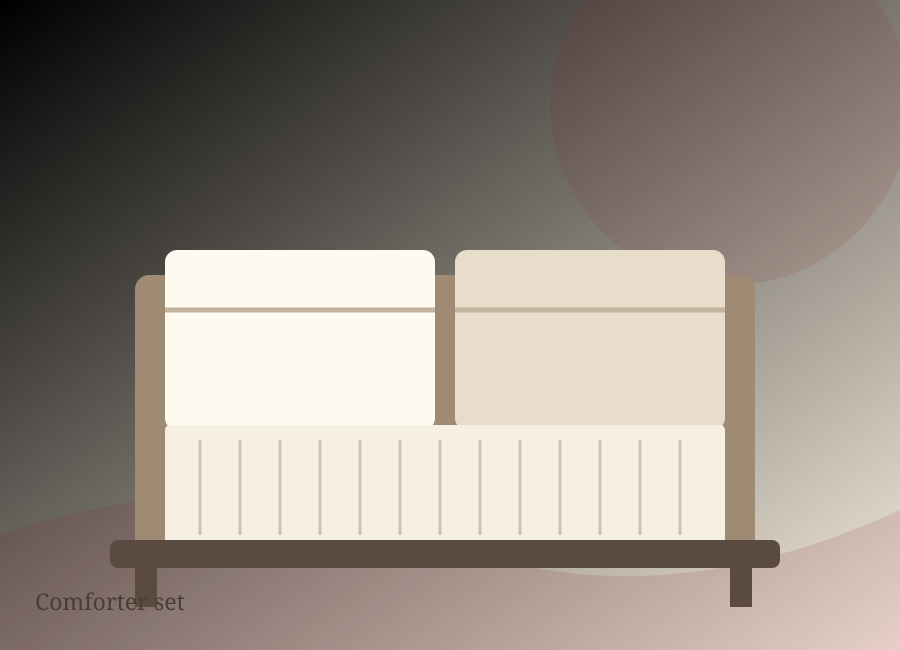
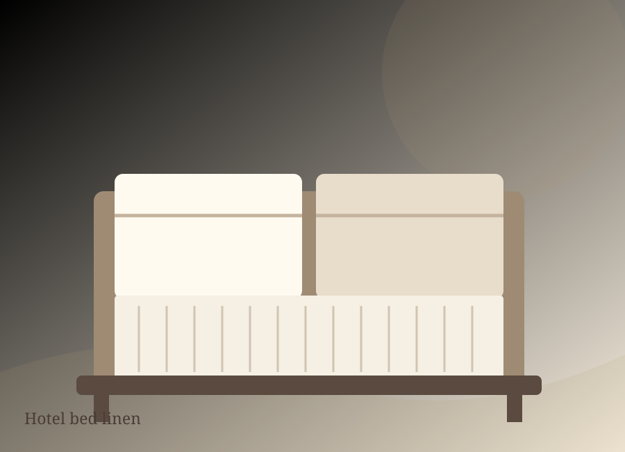
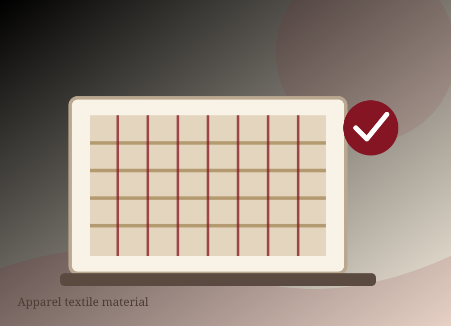

HOME TEXTILES
Sheet sets
Bedding essentials with a clean, comfortable finish.
Explore textile product families and start a conversation about your application, specifications and programme needs.

Bedding essentials with a clean, comfortable finish.

Layered bedding concepts for coordinated collections.
Pattern and colour options for textile product programmes.

Everyday linen concepts for guest-focused environments.

Practical bedding concepts for accommodation settings.

Versatile fabric concepts for apparel applications.